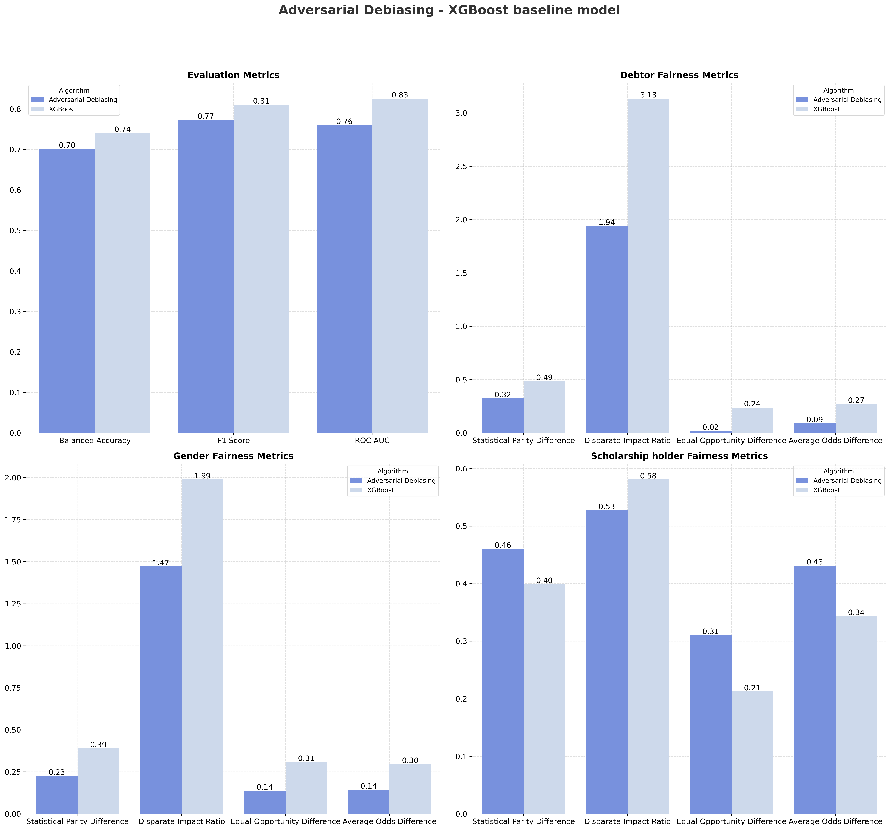
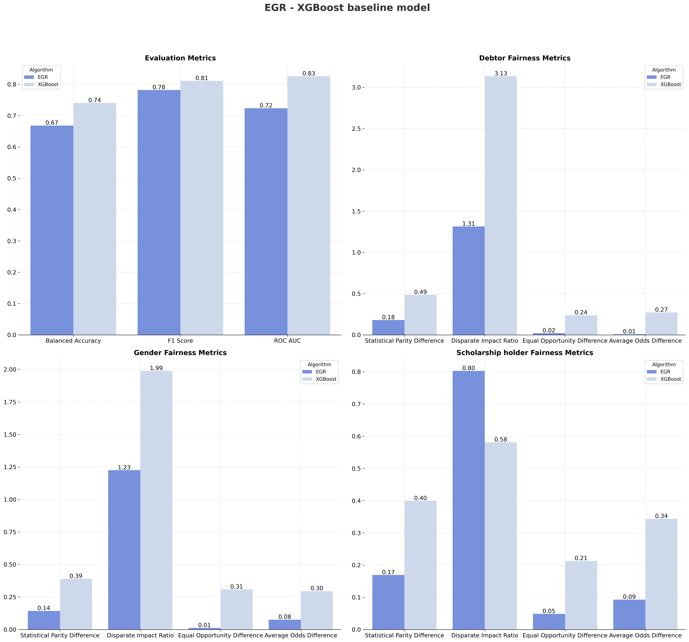

In-Processing Bias Mitigation
In-processing techniques incorporate fairness constraints directly into the model training process. By embedding fairness objectives into the learning algorithm itself, these methods simultaneously optimize for both predictive accuracy and equitable treatment across demographic groups, without requiring data preprocessing or post-hoc adjustments.
Adversarial Debiasing
B. H. Zhang, B. Lemoine, and M. Mitchell, “Mitigating Unwanted Biases with Adversarial Learning,” AAAI/ACM Conference on Artificial Intelligence, Ethics, and Society, 2018. Adversarial Debiasing employs an adversarial training framework to learn fair representations during model optimization. The technique uses two competing neural networks trained simultaneously through a minimax game:
- Predictor: Learns to predict the target outcome while minimizing predictive loss
- Adversary: Attempts to predict protected attributes from the predictor's internal representations
The predictor is optimized to achieve two competing objectives: maximize prediction accuracy on the target variable while simultaneously minimizing the adversary's ability to infer protected attributes from its representations. This adversarial objective forces the predictor to learn features that are informative for the task but invariant to sensitive attributes.
This process is repeated in several steps: 1. Train the Predictor to predict the target variable. 2. Train the Adversary to predict the protected attribute from the Predictor’s output. 3. Update both models so the Predictor becomes less informative about the protected attribute, and the Adversary becomes less able to predict it. 4. Repeat until the Predictor is accurate and fair.
This approach is flexible, supporting multiple fairness criteria (demographic parity, equalized odds) and applicable to various model architectures and data types. The key advantage is achieving fairness without requiring dataset modifications or architectural constraints beyond the adversarial training framework.
Results:

Adversarial Debiasing achieves moderate fairness improvements while maintaining reasonable predictive performance:
Performance Metrics:
| Performance Metric | Baseline | Adversarial Debiasing |
|---|---|---|
| Balanced Accuracy | 0.74 | 0.70 |
| F1-Score | 0.81 | 0.77 |
| ROC-AUC | 0.83 | 0.76 |
Fairness Improvements:
| Protected Attribute | Metric | Baseline | Adversarial Debiasing | Improvement |
|---|---|---|---|---|
| Debtor | Statistical Parity Difference | 0.49 | 0.32 | ✓ |
| Disparate Impact Ratio | 3.14 | 1.94 | ✓ | |
| Equal Opportunity Difference | 0.24 | -0.02 | ✓ | |
| Average Odds Difference | 0.27 | 0.09 | ✓ | |
| Gender | Statistical Parity Difference | 0.39 | 0.23 | ✓ |
| Disparate Impact Ratio | 1.99 | 1.47 | ✓ | |
| Equal Opportunity Difference | 0.31 | 0.14 | ✓ | |
| Average Odds Difference | 0.30 | 0.14 | ✓ | |
| Scholarship holder | Statistical Parity Difference | -0.40 | -0.46 | ✗ |
| Disparate Impact Ratio | 0.58 | 0.53 | ✗ | |
| Equal Opportunity Difference | -0.21 | -0.31 | ✗ | |
| Average Odds Difference | -0.34 | -0.43 | ✗ |
Adversarial Debiasing achieves mixed results, improving fairness for Debtor and Gender while degrading Scholarship holder metrics.
This degradation occurs because the adversarial training was prioritized to address fairness violations in the Debtor and Gender attributes. Including more protected attributes in adversarial training increases model complexity and creates competing optimization objectives, leading to performance degradation.
The 8% drop in ROC-AUC (0.76 vs 0.83 baseline) represents a moderate accuracy-fairness tradeoff.
These results highlight the challenge of adversarial debiasing in multi-attribute scenarios, where increasing the number of protected attributes amplifies the difficulty of achieving uniform fairness improvements across all groups.
Exponentiated Gradient Reduction (EGR)
A. Agarwal, A. Beygelzimer, M. Dudik, J. Langford, and H. Wallach, “A Reductions Approach to Fair Classification,” International Conference on Machine Learning, 2018.
Exponentiated Gradient Reduction is an in-processing technique that formulates fair classification as a constrained optimization problem. Rather than modifying the learning algorithm internally, EGR treats the base classifier as a black box and applies fairness constraints through a reduction framework.
The approach decomposes the fairness-constrained learning problem into a sequence of cost-sensitive classification tasks. At each iteration, the algorithm:
- Evaluates current fairness violations across protected groups
- Constructs cost-sensitive weights that penalize predictions contributing to unfairness
- Trains a new classifier on the reweighted data
- Combines classifiers using learned mixture weights
EGR supports multiple fairness criteria through linear constraints:
- Demographic Parity: \(P(\hat{Y}=1 | A=0) = P(\hat{Y}=1 | A=1)\)
- Equalized Odds: \(P(\hat{Y}=1 | Y=y, A=0) = P(\hat{Y}=1 | Y=y, A=1)\) for all \(y\)
The algorithm uses exponentiated gradient updates to iteratively adjust the mixture of classifiers until fairness constraints are satisfied within a specified tolerance. The final model is a randomized ensemble that balances accuracy and fairness optimally.
Results:

Exponentiated Gradient Reduction achieves strong fairness improvements with significant performance impact:
Performance Metrics:
| Performance Metric | Baseline | EGR |
|---|---|---|
| Balanced Accuracy | 0.74 | 0.67 |
| F1-Score | 0.81 | 0.78 |
| ROC-AUC | 0.83 | 0.72 |
Fairness Improvements:
| Protected Attribute | Metric | Baseline | EGR | Improvement |
|---|---|---|---|---|
| Debtor | Statistical Parity Difference | 0.49 | 0.18 | ✓ |
| Disparate Impact Ratio | 3.14 | 1.31 | ✓ | |
| Equal Opportunity Difference | 0.24 | -0.02 | ✓ | |
| Average Odds Difference | 0.27 | 0.01 | ✓ | |
| Gender | Statistical Parity Difference | 0.39 | 0.14 | ✓ |
| Disparate Impact Ratio | 1.99 | 1.23 | ✓ | |
| Equal Opportunity Difference | 0.31 | 0.01 | ✓ | |
| Average Odds Difference | 0.30 | 0.08 | ✓ | |
| Scholarship holder | Statistical Parity Difference | -0.40 | -0.17 | ✓ |
| Disparate Impact Ratio | 0.58 | 0.80 | ✓ | |
| Equal Opportunity Difference | -0.21 | -0.05 | ✓ | |
| Average Odds Difference | -0.34 | -0.09 | ✓ |
Exponentiated Gradient Reduction delivers exceptional fairness improvements across all protected attributes and metrics.
However, these fairness gains come at the cost of substantial performance degradation. The method experiences a 13% ROC-AUC decrease, a 9% drop in Balanced Accuracy, and a 4% reduction in F1-Score.
Unlike Adversarial Debiasing's mixed results, EGR improves all 12 fairness metrics uniformly, demonstrating its effectiveness as a comprehensive solution for multi-attribute fairness in student retention prediction, albeit with significant predictive performance sacrifice.